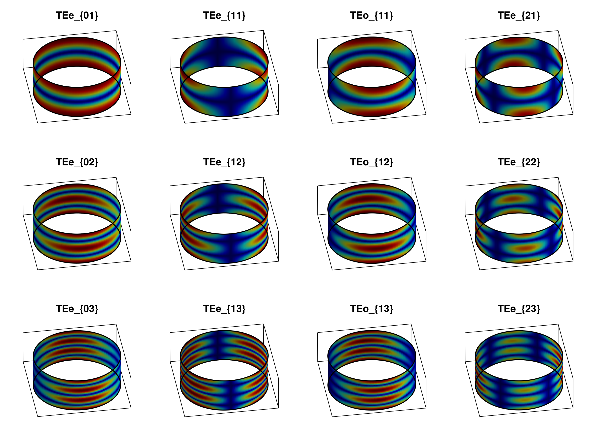
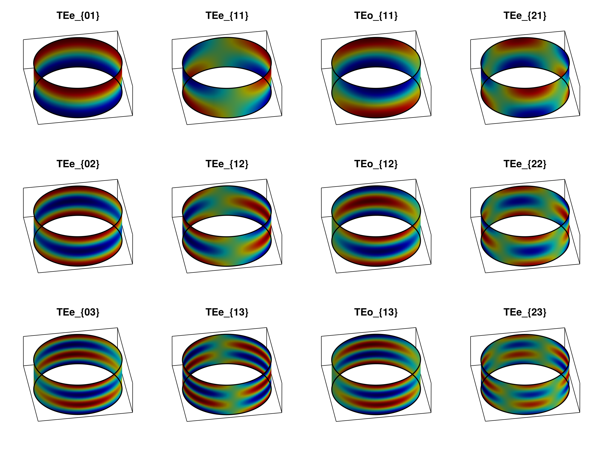
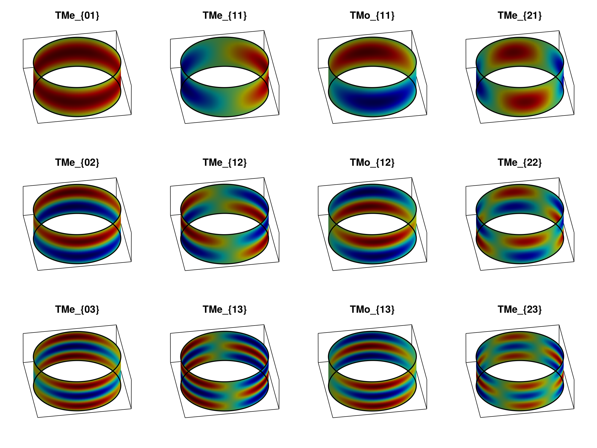
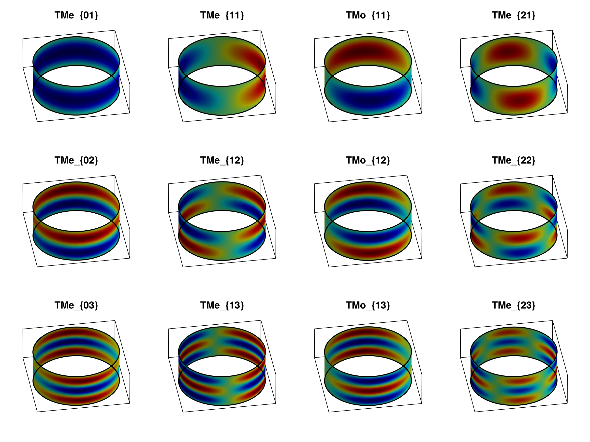
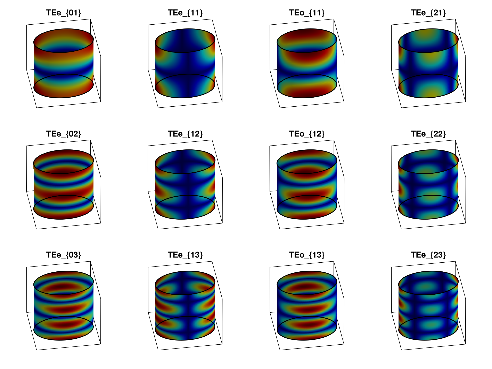
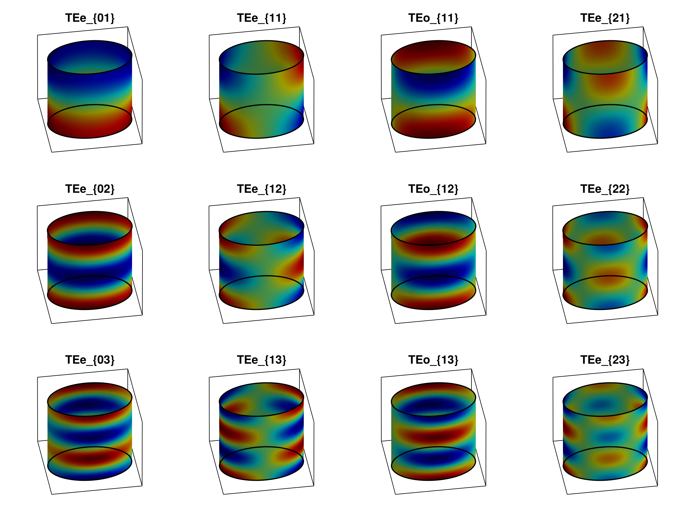
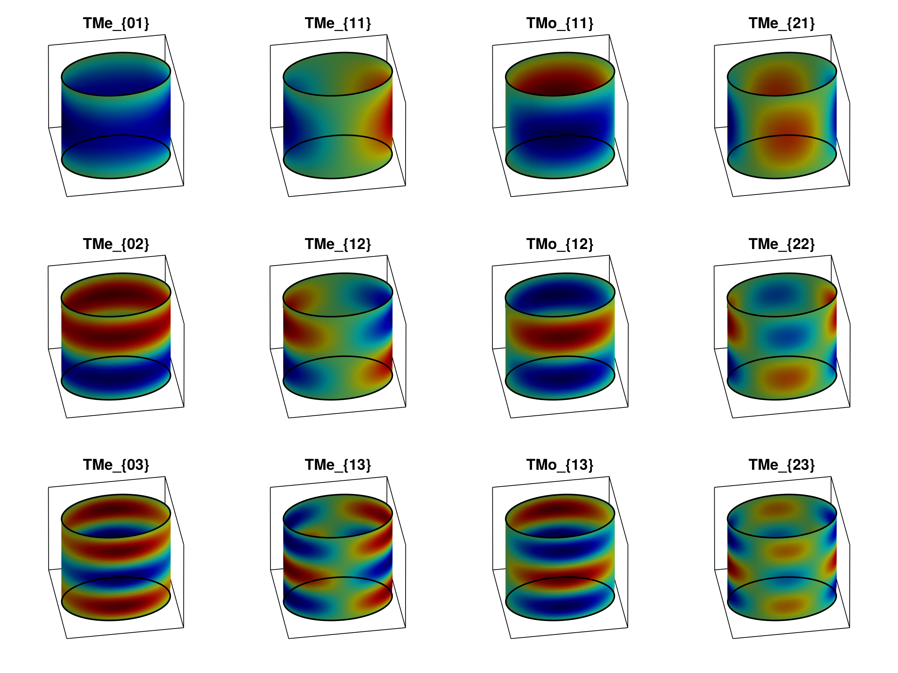
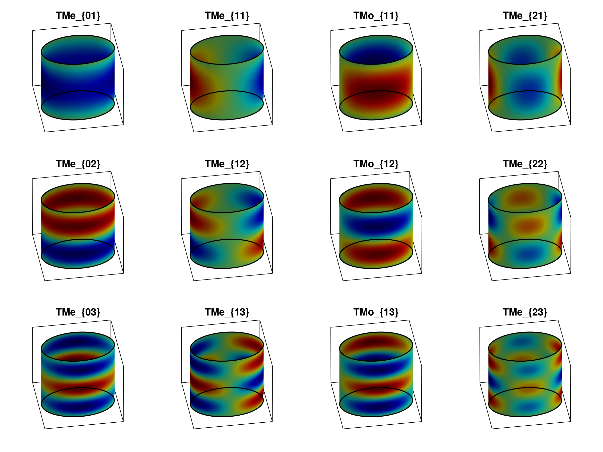

Elliptic Radial Gallery
This page collects pre-generated field galleries for elliptic radial waveguides. The images are embedded here as static assets, so they are not recomputed during documentation builds.
Moderate Elliptic Section
The moderate case uses a smoother elliptic cross-section and displays the first modes for representative TE and TM transverse components.
| TE $|H_\xi|$ | TE $\operatorname{Re}(H_\xi)$ | |:–:|:–:| |

|
|| TM $\operatorname{Re}(E_\xi)$ | TM $\operatorname{Im}(E_\xi)$ |
|---|---|
 |  |
Eccentric Elliptic Section
The eccentric case stresses the same mode evaluation on a more elongated elliptic coordinate surface.
| TE $|H_\xi|$ | TE $\operatorname{Re}(H_\xi)$ | |:–:|:–:| |

|
|| TM $\operatorname{Re}(E_\xi)$ | TM $\operatorname{Im}(E_\xi)$ |
|---|---|
 |  |